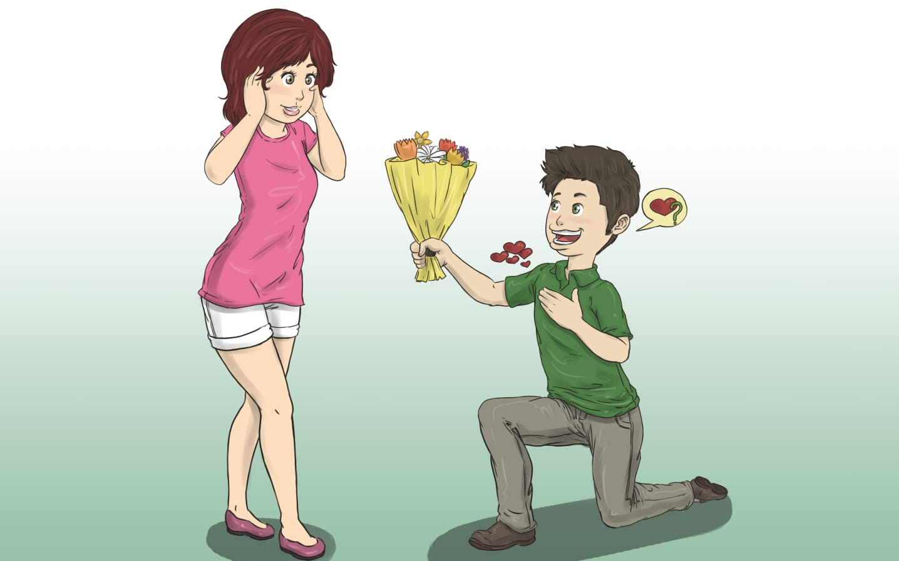

¡Bienvenido a mi página personal!
Hay más en mi de lo que suelo mostrar
Nombre:Violeta Guadalupe Salazar Vargas
Edad:17 años
Fecha de nacimiento:21/febrero/2009
Lugar de origen:León, Gto.
Descripción personal:Soy una persona introspectiva, curiosa y sensible, pero con una actitud reservada.
Uno de los mejores recuerdos que tengo fue cuando fui al cine con mi familia (Mamá, Papá y Hermana). Me diverti mucho, además de que comí comida chatarra.
Mis actividades favoritas son:
Música:Pony-Ginuwine y The beatles-And I Love her.
Películas:Hotel, Masacre en Texas y GhostLand.
Libros: Clemencia-Ignacio Manuel Altamirano.
Comida: Tamales.
Estudio en el CETAC 10 y estudio Programación.
Mis logros: Uno de los logros academicos que tengo son diplomas por mi rendimiento academico.
Uno de mis mayores sueños es poder viajar por todo el mundo.
Algunos momentos especiales de mi vida:

Soy una mezcla de pensamientos que no siempre sé expresar, curiosidades que nunca terminan y sueños que todavía no tienen forma. Me gusta observar, escuchar y comprender. A veces prefiero el silencio, otras veces quisiera descubrirlo todo. Simplemente soy alguien que intenta encontrar su propio camino.